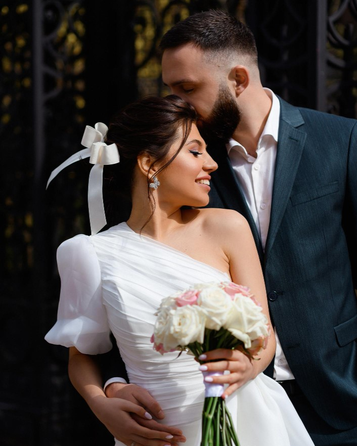
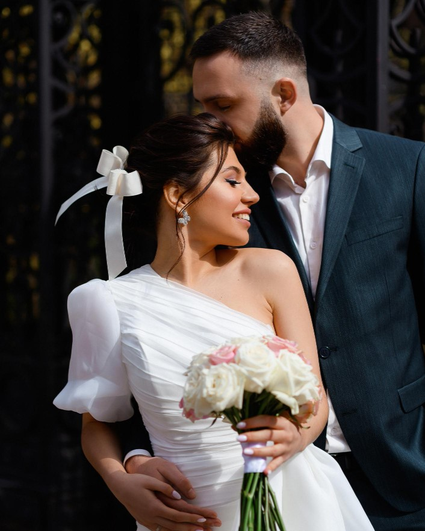

Na Duo Cerimonial, nosso trabalho é estar atentas ao que está acontecendo e ao que ainda pode acontecer. Organizamos tudo com cuidado para que você não precise sustentar imprevistos no momento em que deveria apenas viver.
Você não precisa estar no controle. Precisa estar presente. Nós estamos ali para garantir isso.
Nossos Serviços 



Cuidado em cada etapa

um norte seguro

Tranquilidade Absoluta
Tendências de Cor
Casamento no Campo
Dicas para Convidados